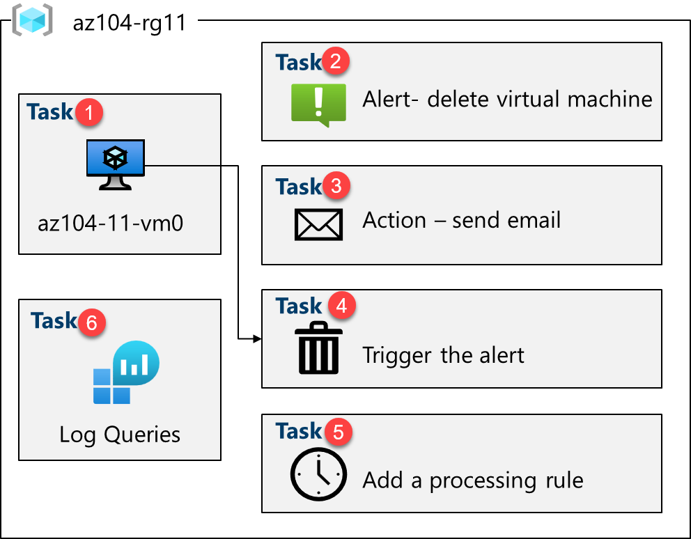
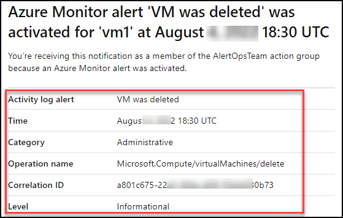
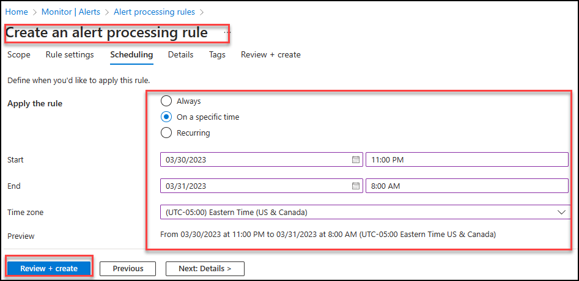

Lab - Implement Monitoring
Lab Introduction
In this lab, you learn about Azure Monitor. You learn to create an alert and send it to an action group. You trigger and test the alert and check the activity log.
This lab requires an Azure subscription. Your subscription type may affect the availability of features in this lab. You may change the region, but the steps are written using East US.
Estimated Timing: 40 Minutes
Lab Scenario
Adamantus Technologies has migrated their infrastructure to Azure. It is important that Administrators are notified of any significant infrastructure changes. You plan to examine the capabilities of Azure Monitor, including Log Analytics.
Interactive Lab Simulation
There is an interactive lab simulation that you might find useful for this topic. The simulation lets you to click through a similar scenario at your own pace. There are differences between the interactive simulation and this lab, but many of the core concepts are the same. An Azure subscription is not required.
- Implement Monitoring. Create a Log Analytics workspace and Azure-automation solutions. Review monitoring and diagnostic settings for virtual machines. Review Azure Monitor and Log Analytics functionality.
Architecture Diagram

Job Skills
- Task 1: Use a template to provision an infrastructure.
- Task 2: Create an alert.
- Task 3: Configure action group notifications.
- Task 4: Trigger an alert and confirm it is working.
- Task 5: Configure an alert processing rule.
- Task 6: Use Azure Monitor log queries.
Task 1: Use a Template to Provision an Infrastructure
In this task, you will deploy a virtual machine that will be used to test monitoring scenarios.
-
Sign in to the Azure portal -
https://portal.azure.com. -
From the Azure portal, search for and select
Deploy a custom template. -
On the custom deployment page, select Build you own template in the editor.
-
On the edit template page, select Load file.
-
Locate and select the az104-11-vm-template.json file in your download directory and select Open.
-
Select Save.
-
Use the following information to complete the custom deployment fields, leaving all other fields with their default values:
Setting Value Subscription Your Azure subscription Resource group az104-rg11(If necessary, select Create new)Region East US Username localadminPassword Provide a complex password -
Select Review + Create, then select Create.
-
Wait for the deployment to finish, then click Go to resource group.
-
Review what resources were deployed. There should be one virtual network with one virtual machine.
Configure Azure Monitor for Virtual Machines (this will be used in the last task)
-
In the portal, search for and select Monitor.
-
Take a minute to review all the insights, detection, triage, and diagnosis tools that are available.
-
Select View in the VM Insights box, and then select Configure Insights.
-
Select your virtual machine, and then Enable (twice).
-
Take the defaults for subscription and data collection rules, then select Configure.
-
It will take a few minutes for the virtual machine agent to install and configure, proceed to the next step.
Task 2: Create an Alert
In this task, you create an alert for when a virtual machine is deleted.
-
Continue on the Monitor page , select Alerts.
-
Select Create + and select Alert rule.
-
Select the box for the subscription, then select Apply. This alert will apply to any virtual machines in the subscription. Alternatively, you could just specify one particular machine.
-
Select the Condition tab and then select the See all signals link.
-
Search for and select Delete Virtual Machine (Virtual Machines). Notice the other built-in signals. Select Apply
-
In the Alert logic area (scroll down), review the Event level selections. Leave the default of All selected.
-
Review the Status selections. Leave the default of All selected.
-
Leave the Create an alert rule pane open for the next task.
Task 3: Configure Action Group Notifications
In this task, if the alert is triggered send an email notification to the operations team.
-
Continue working on your alert. Select Next: Actions, and then select Create action group.
Did you know? You can add up to five action groups to an alert rule. Action groups are executed concurrently, in no specific order. Multiple alert rules can use the same action group.
-
On the Basics tab, enter the following values for each setting.
Setting Value Project details Subscription your subscription Resource group az104-rg11 Region Global (default) Instance details Action group name Alert the operations team(must be unique in the resource group)Display name AlertOpsTeam -
Select Next: Notifications and enter the following values for each setting.
Setting Value Notification type Select Email/SMS message/Push/Voice Name VM was deleted -
Select Email, and in the Email box, enter your email address, and then select OK.
Note: You should receive an email notification saying you were added to an action group. There may be a few minutes delay, but that is a sure sign the rule has deployed.
-
Select Review + Create and then Create.
-
Once the action group is created move to the Next: Details tab and enter the following values for each setting.
Setting Value Alert rule name VM was deletedAlert rule description A VM in your resource group was deleted -
Select Review + create to validate your input, then select Create.
Task 4: Trigger an Alert and Confirm it is working
In this task, you trigger the alert and confirm a notification is sent.
Note: If you delete the virtual machine before the alert rule deploys, the alert rule might not be triggered.
-
In the portal, search for and select Virtual machines.
-
Check the box for the az104-vm0 virtual machine.
-
Select Delete from the menu bar.
-
Check the box for Apply force delete. Check the box at the bottom confirming that you want the resources to be deleted and select Delete.
-
In the title bar, select the Notifications icon and wait until vm0 is successfully deleted.
-
You should receive a notification email that reads, Important notice: Azure Monitor alert VM was deleted was activated... If not, open your email program and look for an email from azure-noreply@microsoft.com.

-
On the Azure portal resource menu, select Monitor, and then select Alerts in the menu on the left.
-
You should have three verbose alerts that were generated by deleting vm0.
Note: It can take a few minutes for the alert email to be sent and for the alerts to be updated in the portal. If you don't want to wait, continue to the next task and then return.
- Select the name of one of the alerts (For example, VM was deleted). An Alert details pane appears that shows more details about the event.
Task 5: Configure an Alert Processing Rule
In this task, you create an alert rule to suppress notifications during a maintenance period.
-
Continue in the Alerts blade, select Alert processing rules and then + Create.
-
Select your Subscription, then select Apply.
-
Select Next: Rule settings, then select Suppress notifications.
-
Select Next: Scheduling.
-
By default, the rule works all the time, unless you disable it or configure a schedule. You are going to define a rule to suppress notifications during overnight maintenance. Enter these settings for the scheduling of the alert processing rule:
Setting Value Apply the rule At a specific time Start Enter today's date at 10 pm. End Enter tomorrow's date at 7 am. Time zone Select the local timezone. 
-
Select Next: Details and enter these settings:
Setting Value Resource group az104-rg11 Rule name Planned MaintenanceDescription Suppress notifications during planned maintenance. -
Select Review + create to validate your input, then select Create.
Task 6: Use Azure Monitor Log Queries
In this task, you will use Azure Monitor to query the data captured from the virtual machine.
-
In the Azure portal, search for and select
Monitor, then click Logs. -
If necessary, close the splash screen.
-
If necessary, select a scope, your Subscription. Select Apply.
-
In the Queries tab, select Virtual machines (left pane). You may need to reopen the blade.
-
Review the queries that are available. Run (hover over the query) the Count heartbeats query.
-
You should receive a heartbeat count for when the virtual machine was running.
-
Review the query. This query uses the heartbeat table.
-
Replace the query with this one, and then click Run. Review the resulting chart.
InsightsMetrics
| where TimeGenerated > ago(1h)
| where Name == "UtilizationPercentage"
| summarize avg(Val) by bin(TimeGenerated, 5m), Computer //split up by computer
| render timechart
- As you have time, review and run other queries.
Did you know?: If you want to practice with other queries, there is a Log Analytics Demo Environment.
Did you know?: Once you find a query you like, you can create an alert from it.
Cleanup your Resources
If you are working with your own subscription take a minute to delete the lab resources. This will ensure resources are freed up and cost is minimized. The easiest way to delete the lab resources is to delete the lab resource group.
- In the Azure portal, select the resource group, select Delete the resource group, Enter resource group name, and then click Delete.
- Using Azure PowerShell,
Remove-AzResourceGroup -Name resourceGroupName. - Using the CLI,
az group delete --name resourceGroupName.
Key Takeaways
Congratulations on completing the lab. Here are the main takeaways for this lab.
- Alerts help you detect and address issues before users notice there might be a problem with your infrastructure or application.
- You can alert on any metric or log data source in the Azure Monitor data platform.
- An alert rule monitors your data and captures a signal that indicates something is happening on the specified resource.
- An alert is triggered if the conditions of the alert rule are met. Several actions (email, SMS, push, voice) can be triggered.
- Action groups include individuals that should be notified of an alert.
Address: H-34, Ground Floor, Sector 63, Noida, Uttar Pradesh
Email: info@ceekh.com